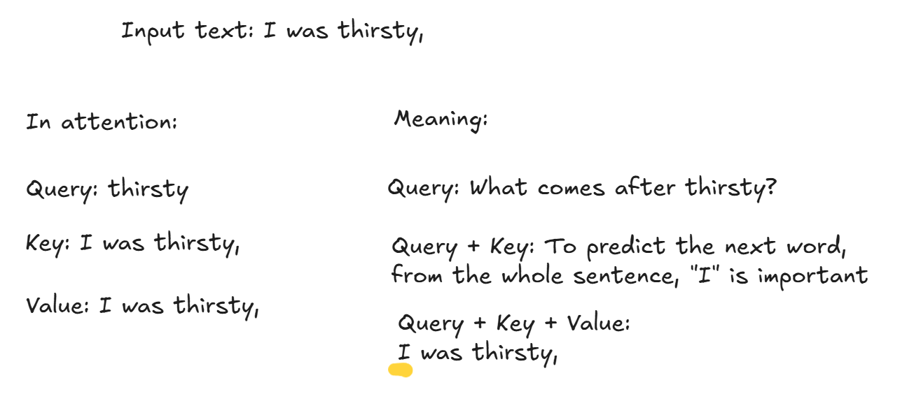

from transformers import AutoTokenizer, AutoModelForCausalLM, GenerationConfig, DynamicCache, StaticCache
import torch
import torch.nn as nn
import time, osHuggingFace KV cache
HuggingFace KV cache
In this notebook, we will learn about what KV cache is and try out different kinds of HuggingFace KV cache, such as dynamic and static. We will only look at decoder models. To follow along, use colab notebook.
Brief look at the Transformer
To understand what KV cache is and why it is useful, we have to understand what the transformer does in a large languge model. Transformer block consists of self attention and feed forward network.
Let’s take a look at the transformer in a big picture. In decoder models, the goal is to predict the next word (or a token). The self attention highlights which words are important by doing weighted sum. For instance, we have a sentence, “I was thirsty, so I”, and we want to predict the next word. It makes sense to pay attention to the word, “thirsty”. That’s what the attention does. And the feed forward network figures out the next words with these clues.

Inside of the self attention, we calculate query, key, and value for each token. So, from the example sentence we had, “I was thirsty,”, each word has a query, key, and value.
Query tells which word to predict. If we use query for “thirsty,”, it is like asking what is the next word after “thirsty”? It is easy to think of a query as a one word. If we used a differnt word, like “I”, it is like asking what comes after “I”?
Keys tells which words to focus more respect to query. We can think of keys as a sentence with words “thisty” and other words that come before it, “I was thirsty,”. To predict the next word after “thirsty”, it is important to pay attention to say “I”. With query and keys, we gained information about which words to focus.
Value provides an updated sentence with highlighted words. Using query and keys, we know which ones to focus from the sentence, but we need to apply this information into the sentence itself. Think of values as the whole sentence. And with query + keys + values, we have a highlighted sentence.
Let’s assume the model generated “so” as an output.
You see how we needed a query for one word we want to make prediction of, but needed keys and values for the whole sentence? For instance, we fed the model with “I was thirsty,” and its output was “so”. To generate “so”, it calculated keys and values for “I was thirsty,”. Now we have “I was thirsty, so” as an input to the model. The model needs “so” as a query, “I was thirsty, so” as keys and values to predict the next word. But we calculated keys and values for “I was thirsty,” already. It would be a waste to calculate it again (which grows quadratically).
By saving the keys and values for the previous words, we can compute the keys and values with linear time complexity. However, it consumes more memory because we have to save those values.This is KV cache.
There are two ways to use KV cache: dynamic and static. In dynamic cache, cache grows with each generation. However, static cache has a fixed cache.
I didn’t go into details when explaining the transformer in LLMs. If you would like to learn more, I included resources to learn more about them in the conclusion section at the end.
Also, Hugging Face supports more sophisticated techniques such as Cache offloading, Quantized cache, Encoder-decoder cache, and Model-specific cache. Please take a look at KV cache strategies from HuggingFace documentations for more info.
KV Cache
Now, let’s dive into the code. We first import libraries and setup tools.
device = 'cuda' if torch.cuda.is_available() else 'cpu'
os.environ["TOKENIZERS_PARALLELISM"] = "false" # To prevent long warnings :)
torch.set_float32_matmul_precision('high')
num_new_tokens = 200def tks(model, input_ids, num_new_tokens=200, **kwargs):
"Generate text and print time and tokens/sec"
start_time = time.time()
outputs = model.generate(**input_ids, max_new_tokens=num_new_tokens, **kwargs)
total_time = time.time() - start_time
print(f"\nTime: {total_time:.2f} sec")
print(f"{int(num_new_tokens/total_time)} tokens/sec")
print(tokenizer.batch_decode(outputs, skip_special_tokens=True)[0])def bytes_to_giga_bytes(bytes): return f'{bytes / 1024 / 1024 / 1024:.2f} GB'KV cache speeds up the inference. HuggingFace offers dynamic cache and static cache.
Here’s more info on Caching and KV cache strategies from HuggingFace.
I conducted some experiment with time and memory.Results cache runs with generating 200 tokens on SmolLM2-135M:
| Cache | Hardware | Time (s) | Tokens per sec | Note |
|---|---|---|---|---|
| None | L4 | 6 | 32 | |
| Dynamic | L4 | 6 | 32 | |
| Static | L4 | 1 | 153 | |
| None | T4 | 9 | 21 | |
| Dynamic | T4 | 7.44 | 26 | |
| Static | T4 | 9.35 | 21 | /usr/local/lib/python3.12/dist-packages/torch/_inductor/compile_fx.py:2509: UserWarning: Tesla T4 does not support bfloat16 compilation natively, skipping |
| None | A100 | 7.40 | 27 | |
| Dynamic | A100 | 6.30 | 31 | |
| Static | A100 | 1.39 | 143 |
No cache
HuggingFace models use dynamic cache by default. By setting use_cache=False, we can generate without cache.
tokenizer = AutoTokenizer.from_pretrained("HuggingFaceTB/SmolLM2-135M")
model = AutoModelForCausalLM.from_pretrained("HuggingFaceTB/SmolLM2-135M", dtype=torch.bfloat16, device_map="auto")
model.generation_config = GenerationConfig(use_cache=False)
model.generation_configGenerationConfig {
"use_cache": false
}To change the behavior of generation, we can either use model.generation_config with GenerationConfig or pass keywords to model.generate. Let’s use the GenerationConfig.
input_text = "The theory of special relativity states "
input_ids = tokenizer(input_text, return_tensors="pt").to(model.device.type)
tks(model, input_ids)
Time: 8.73 sec
22 tokens/sec
The theory of special relativity states 200 years ago that the speed of light is constant in all inertial frames. This is a very important fact, because it means that the speed of light is the same in all inertial frames.
The speed of light is the same in all inertial frames.
The speed of light is the same in all inertial frames.
The speed of light is the same in all inertial frames.
The speed of light is the same in all inertial frames.
The speed of light is the same in all inertial frames.
The speed of light is the same in all inertial frames.
The speed of light is the same in all inertial frames.
The speed of light is the same in all inertial frames.
The speed of light is the same in all inertial frames.
The speed of light is the same in all inertial frames.
The speed of light is the same in all inertial frames.
The speed of lightUsing the keyword use_cache=False to model.generate.
tks(model, input_ids, use_cache=False)
Time: 8.03 sec
24 tokens/sec
The theory of special relativity states 200 years ago that the speed of light is constant in all inertial frames. This is a very important fact, because it means that the speed of light is the same in all inertial frames.
The speed of light is the same in all inertial frames.
The speed of light is the same in all inertial frames.
The speed of light is the same in all inertial frames.
The speed of light is the same in all inertial frames.
The speed of light is the same in all inertial frames.
The speed of light is the same in all inertial frames.
The speed of light is the same in all inertial frames.
The speed of light is the same in all inertial frames.
The speed of light is the same in all inertial frames.
The speed of light is the same in all inertial frames.
The speed of light is the same in all inertial frames.
The speed of lightDynamic cache
This is the default cache for HuggingFace models. KV cache is dynamically added each time in the loop. Therefore, this cannot be used with torch.compile.
model = AutoModelForCausalLM.from_pretrained("HuggingFaceTB/SmolLM2-135M", dtype=torch.bfloat16, device_map="auto")
tks(model, input_ids)Setting `pad_token_id` to `eos_token_id`:0 for open-end generation.
Time: 7.94 sec
25 tokens/sec
The theory of special relativity states 200 years ago that the speed of light is constant in all inertial frames. This is a very important fact, because it means that the speed of light is the same in all inertial frames.
The speed of light is the same in all inertial frames.
The speed of light is the same in all inertial frames.
The speed of light is the same in all inertial frames.
The speed of light is the same in all inertial frames.
The speed of light is the same in all inertial frames.
The speed of light is the same in all inertial frames.
The speed of light is the same in all inertial frames.
The speed of light is the same in all inertial frames.
The speed of light is the same in all inertial frames.
The speed of light is the same in all inertial frames.
The speed of light is the same in all inertial frames.
The speed of lightStatic cache
Static cache initializes a bulk of memory for kv cache. It takes more memory than dynamic cache. However, it can be compiled. In my experience, static cache was slower than dynamic cache on CPU and T4, but faster on L4 and A100.
model = AutoModelForCausalLM.from_pretrained("HuggingFaceTB/SmolLM2-135M", dtype=torch.bfloat16, device_map="auto")
model.generation_config.cache_implementation = "static"
model.generation_configGenerationConfig {
"bos_token_id": 0,
"cache_implementation": "static",
"eos_token_id": 0
}model.forward is compiled automatically with static cache. But it is also possible to compile with differen options.
# model.forward = torch.compile(model.forward, mode="reduce-overhead")
# model.forward = torch.compile(model.forward, mode="reduce-overhead", fullgraph=True)After compiling, first run takes a long time.
tks(model, input_ids)Setting `pad_token_id` to `eos_token_id`:0 for open-end generation.
W0928 19:52:23.353000 791 torch/_inductor/utils.py:1436] [0/0] Not enough SMs to use max_autotune_gemm mode
/usr/local/lib/python3.12/dist-packages/torch/_inductor/compile_fx.py:2509: UserWarning: Tesla T4 does not support bfloat16 compilation natively, skipping
warnings.warn(
/usr/local/lib/python3.12/dist-packages/torch/_inductor/compile_fx.py:2509: UserWarning: Tesla T4 does not support bfloat16 compilation natively, skipping
warnings.warn(
/usr/local/lib/python3.12/dist-packages/torch/_inductor/compile_fx.py:2509: UserWarning: Tesla T4 does not support bfloat16 compilation natively, skipping
warnings.warn(
/usr/local/lib/python3.12/dist-packages/torch/_inductor/compile_fx.py:2509: UserWarning: Tesla T4 does not support bfloat16 compilation natively, skipping
warnings.warn(
/usr/local/lib/python3.12/dist-packages/torch/_inductor/compile_fx.py:2509: UserWarning: Tesla T4 does not support bfloat16 compilation natively, skipping
warnings.warn(
/usr/local/lib/python3.12/dist-packages/torch/_inductor/compile_fx.py:2509: UserWarning: Tesla T4 does not support bfloat16 compilation natively, skipping
warnings.warn(
/usr/local/lib/python3.12/dist-packages/torch/_inductor/compile_fx.py:2509: UserWarning: Tesla T4 does not support bfloat16 compilation natively, skipping
warnings.warn(
/usr/local/lib/python3.12/dist-packages/torch/_inductor/compile_fx.py:2509: UserWarning: Tesla T4 does not support bfloat16 compilation natively, skipping
warnings.warn(
/usr/local/lib/python3.12/dist-packages/torch/_inductor/compile_fx.py:2509: UserWarning: Tesla T4 does not support bfloat16 compilation natively, skipping
warnings.warn(
/usr/local/lib/python3.12/dist-packages/torch/_inductor/compile_fx.py:2509: UserWarning: Tesla T4 does not support bfloat16 compilation natively, skipping
warnings.warn(
/usr/local/lib/python3.12/dist-packages/torch/_inductor/compile_fx.py:2509: UserWarning: Tesla T4 does not support bfloat16 compilation natively, skipping
warnings.warn(
/usr/local/lib/python3.12/dist-packages/torch/_inductor/compile_fx.py:2509: UserWarning: Tesla T4 does not support bfloat16 compilation natively, skipping
warnings.warn(
/usr/local/lib/python3.12/dist-packages/torch/_inductor/compile_fx.py:2509: UserWarning: Tesla T4 does not support bfloat16 compilation natively, skipping
warnings.warn(
/usr/local/lib/python3.12/dist-packages/torch/_inductor/compile_fx.py:2509: UserWarning: Tesla T4 does not support bfloat16 compilation natively, skipping
warnings.warn(
/usr/local/lib/python3.12/dist-packages/torch/_inductor/compile_fx.py:2509: UserWarning: Tesla T4 does not support bfloat16 compilation natively, skipping
warnings.warn(
/usr/local/lib/python3.12/dist-packages/torch/_inductor/compile_fx.py:2509: UserWarning: Tesla T4 does not support bfloat16 compilation natively, skipping
warnings.warn(
/usr/local/lib/python3.12/dist-packages/torch/_inductor/compile_fx.py:2509: UserWarning: Tesla T4 does not support bfloat16 compilation natively, skipping
warnings.warn(
/usr/local/lib/python3.12/dist-packages/torch/_inductor/compile_fx.py:2509: UserWarning: Tesla T4 does not support bfloat16 compilation natively, skipping
warnings.warn(
Time: 124.21 sec
1 tokens/sec
The theory of special relativity states 2 things:
(1) The speed of light is constant in all inertial frames of reference.
(2) The speed of light is the same in all inertial frames of reference.
The first statement is called the Lorentz transformation. The second is called the Lorentz contraction.
The Lorentz transformation is a mathematical transformation that changes the speed of light in a frame of reference. The Lorentz transformation is a mathematical transformation that changes the speed of light in a frame of reference.
The Lorentz transformation is a mathematical transformation that changes the speed of light in a frame of reference. The Lorentz transformation is a mathematical transformation that changes the speed of light in a frame of reference.
The Lorentz transformation is a mathematical transformation that changes the speed of light in a frame of reference. The Lorentz transformation is a mathematical transformation that changes the speed of light in a frame of reference.
The Lorenttks(model, input_ids)Setting `pad_token_id` to `eos_token_id`:0 for open-end generation.
Time: 9.15 sec
21 tokens/sec
The theory of special relativity states 2 things:
(1) The speed of light is constant in all inertial frames of reference.
(2) The speed of light is the same in all inertial frames of reference.
The first statement is called the Lorentz transformation. The second is called the Lorentz contraction.
The Lorentz transformation is a mathematical transformation that changes the speed of light in a frame of reference. The Lorentz transformation is a mathematical transformation that changes the speed of light in a frame of reference.
The Lorentz transformation is a mathematical transformation that changes the speed of light in a frame of reference. The Lorentz transformation is a mathematical transformation that changes the speed of light in a frame of reference.
The Lorentz transformation is a mathematical transformation that changes the speed of light in a frame of reference. The Lorentz transformation is a mathematical transformation that changes the speed of light in a frame of reference.
The LorentDigging into details
https://huggingface.co/docs/transformers/v4.56.2/llm_tutorial_optimization#32-the-key-value-cache
We looked at how different cache
tokenizer = AutoTokenizer.from_pretrained("HuggingFaceTB/SmolLM2-135M")
model = AutoModelForCausalLM.from_pretrained("HuggingFaceTB/SmolLM2-135M", dtype=torch.bfloat16, device_map="auto")input_text = "The theory of special relativity states "
input_ids = tokenizer(input_text, return_tensors="pt").to(model.device.type)
start_time = time.time()
outputs = model.generate(**input_ids, max_length=num_new_tokens)
total_time = time.time() - start_time
print(f"\nTime: {total_time:.2f} sec")
print(f"{int(num_new_tokens/total_time)} tokens/sec")
print(tokenizer.batch_decode(outputs, skip_special_tokens=True)[0])Setting `pad_token_id` to `eos_token_id`:0 for open-end generation.
Time: 7.69 sec
26 tokens/sec
The theory of special relativity states 200 years ago that the speed of light is constant in all inertial frames. This is a very important fact, because it means that the speed of light is the same in all inertial frames.
The speed of light is the same in all inertial frames.
The speed of light is the same in all inertial frames.
The speed of light is the same in all inertial frames.
The speed of light is the same in all inertial frames.
The speed of light is the same in all inertial frames.
The speed of light is the same in all inertial frames.
The speed of light is the same in all inertial frames.
The speed of light is the same in all inertial frames.
The speed of light is the same in all inertial frames.
The speed of light is the same in all inertial frames.
The speed of light is the same in all inertial framesdisplay(model.config._attn_implementation)'sdpa'bytes_to_giga_bytes(torch.cuda.max_memory_allocated())'12.07 GB'Looking at the shape of cache
No cache input_ids
Before looking into the cache, let’s look at the input_ids without cache. input_ids have shape [batch_size, sequence_len].
input_ids = tokenizer(input_text, return_tensors="pt")["input_ids"].to("cuda")
input_ids, input_ids.shape(tensor([[ 504, 3108, 282, 1767, 24581, 2496, 216]], device='cuda:0'),
torch.Size([1, 7]))for _ in range(5):
next_logits = model(input_ids, use_cache=False)["logits"][:, -1:]
next_token_id = torch.argmax(next_logits,dim=-1)
input_ids = torch.cat([input_ids, next_token_id], dim=-1)
print("shape of input_ids", input_ids.shape)
print(f'Generated text: \n{tokenizer.batch_decode(input_ids[:, -5:], skip_special_tokens=True)[0]}')shape of input_ids torch.Size([1, 8])
shape of input_ids torch.Size([1, 9])
shape of input_ids torch.Size([1, 10])
shape of input_ids torch.Size([1, 11])
shape of input_ids torch.Size([1, 12])
Generated text:
200 years agoNotice how the second dimension (sequence length) grows each iteration.
Dynamic cache
And this is what the input_ids look like with dynamic cache.
past_key_values = None # past_key_values is the key-value cache
generated_tokens = []
next_token_id = tokenizer(input_text, return_tensors="pt")["input_ids"].to("cuda")
for _ in range(5):
next_logits, past_key_values = model(next_token_id, past_key_values=past_key_values, use_cache=True).to_tuple()
next_logits = next_logits[:, -1:]
next_token_id = torch.argmax(next_logits, dim=-1)
print("shape of input_ids", next_token_id.shape)
print("shape of key-value cache", past_key_values[0][0].shape) # shape of [batch_size, num_key_value_heads, sequence_length, head_dim]
generated_tokens.append(next_token_id.item())
print(f'Generated text: \n{tokenizer.batch_decode(input_ids[:, -5:], skip_special_tokens=True)[0]}')shape of input_ids torch.Size([1, 1])
shape of key-value cache torch.Size([1, 3, 7, 64])
shape of input_ids torch.Size([1, 1])
shape of key-value cache torch.Size([1, 3, 8, 64])
shape of input_ids torch.Size([1, 1])
shape of key-value cache torch.Size([1, 3, 9, 64])
shape of input_ids torch.Size([1, 1])
shape of key-value cache torch.Size([1, 3, 10, 64])
shape of input_ids torch.Size([1, 1])
shape of key-value cache torch.Size([1, 3, 11, 64])
Generated text:
200 years agoNotice how we are only feeding one token at a time (input_ids has the shape of [1, 1] with [batch_size, sequence_length]), instead of the whole previous sequence. But we can see that the kv cache is growing dynamically with each iteration. The dyanmic cache has the shape of [batch_size, num_key_value_heads, sequence_length, head_dim], and the sequence_length dimension is growing.
If we look at the code in detail, model returns the next_logits and past_key_values.
past_key_values = None # past_key_values is the key-value cache
generated_tokens = []
next_token_id = tokenizer(input_text, return_tensors="pt")["input_ids"].to("cuda")
next_logits, past_key_values = model(next_token_id, past_key_values=past_key_values, use_cache=True).to_tuple()
next_logits, next_logits.shape(tensor([[[12.4375, 1.0859, 1.1953, ..., 10.2500, 11.6875, 8.3125],
[17.2500, 1.7422, 1.8438, ..., 11.8125, 14.0000, 7.4688],
[ 4.8438, -8.8750, -8.8125, ..., 0.0732, 3.1406, -1.2812],
...,
[20.3750, 3.3125, 3.3906, ..., 13.4375, 15.0625, 8.3125],
[15.0000, -1.4297, -1.3281, ..., 3.3594, 9.3125, 7.4688],
[18.8750, 3.3906, 3.4219, ..., 4.3750, 11.4375, 10.3750]]],
device='cuda:0', dtype=torch.bfloat16, grad_fn=<UnsafeViewBackward0>),
torch.Size([1, 7, 49152]))next_logits has shape [batch_size, sequence_length, vocab_size].
If we take the softmax from next_logits for the last token on the last dimension (vocab_size), we get the probability distribution for the next word.
torch.softmax(next_logits[:, -1, :], dim=-1)tensor([[6.4850e-05, 1.2221e-11, 1.2619e-11, ..., 3.2742e-11, 3.8184e-08,
1.3213e-08]], device='cuda:0', dtype=torch.bfloat16,
grad_fn=<SoftmaxBackward0>)However, we are using greedy decoding, and we only care about the most likely next token. Therefore, we just pick the one with the highest value using torch.argmax.
next_logits = next_logits[:, -1:]
next_logits.shapetorch.Size([1, 1, 49152])next_token_id = torch.argmax(next_logits, dim=-1)
next_token_idtensor([[34]], device='cuda:0')The model also returned past_key_values.
past_key_valuesDynamicCache(layers=[DynamicLayer, DynamicLayer, DynamicLayer, DynamicLayer, DynamicLayer, DynamicLayer, DynamicLayer, DynamicLayer, DynamicLayer, DynamicLayer, DynamicLayer, DynamicLayer, DynamicLayer, DynamicLayer, DynamicLayer, DynamicLayer, DynamicLayer, DynamicLayer, DynamicLayer, DynamicLayer, DynamicLayer, DynamicLayer, DynamicLayer, DynamicLayer, DynamicLayer, DynamicLayer, DynamicLayer, DynamicLayer, DynamicLayer, DynamicLayer])len(past_key_values)30past_key_values[0][0].shape, past_key_values[0][1].shape(torch.Size([1, 3, 7, 64]), torch.Size([1, 3, 7, 64]))past_key_values[20][0].shape, past_key_values[20][1].shape(torch.Size([1, 3, 7, 64]), torch.Size([1, 3, 7, 64]))In the model.config, we have 30 num_hidden_layers, and 64 head_dim, 3 num_key_value_heads. And past_key_values has 30 DynamicLayer, and each layer contains a tuple of key and value cache ([0] for key and [1] for values). Each of those cache has a shape of [batch_size, num_key_value_heads, sequence_length, head_dim].
model.configLlamaConfig {
"architectures": [
"LlamaForCausalLM"
],
"attention_bias": false,
"attention_dropout": 0.0,
"bos_token_id": 0,
"dtype": "bfloat16",
"eos_token_id": 0,
"head_dim": 64,
"hidden_act": "silu",
"hidden_size": 576,
"initializer_range": 0.041666666666666664,
"intermediate_size": 1536,
"is_llama_config": true,
"max_position_embeddings": 8192,
"mlp_bias": false,
"model_type": "llama",
"num_attention_heads": 9,
"num_hidden_layers": 30,
"num_key_value_heads": 3,
"pretraining_tp": 1,
"rms_norm_eps": 1e-05,
"rope_interleaved": false,
"rope_scaling": null,
"rope_theta": 100000,
"tie_word_embeddings": true,
"transformers_version": "4.56.1",
"use_cache": true,
"vocab_size": 49152
}If we keep running the model with cache, the sequence_length dimension gets concatenated one by one.
next_logits, past_key_values = model(next_token_id, past_key_values=past_key_values, use_cache=True).to_tuple()past_key_values[0][0].shape, past_key_values[0][1].shape(torch.Size([1, 3, 8, 64]), torch.Size([1, 3, 8, 64]))print("shape of input_ids", next_token_id.shape)
print("length of key-value cache", len(past_key_values[0][0])) # past_key_values are of shape [num_layers, 0 for k, 1 for v, batch_size, length, head_dim]
generated_tokens.append(next_token_id.item())
print(f'Generated text: \n{tokenizer.batch_decode(input_ids[:, -5:], skip_special_tokens=True)[0]}')shape of input_ids torch.Size([1, 1])
length of key-value cache 1
Generated text:
200 years agoAnother way to use HuggingFace Cache is pass cache into the model directly. Here, we create DynamicCache and pass it to the model.
tokenizer = AutoTokenizer.from_pretrained("HuggingFaceTB/SmolLM2-135M")
model = AutoModelForCausalLM.from_pretrained("HuggingFaceTB/SmolLM2-135M", dtype=torch.bfloat16, device_map="auto")
past_key_values = DynamicCache(config=model.config)
generated_tokens = []
next_token_id = tokenizer(input_text, return_tensors="pt")["input_ids"].to("cuda")
for _ in range(5):
next_logits, past_key_values = model(next_token_id, past_key_values=past_key_values).to_tuple()
next_logits = next_logits[:, -1:]
next_token_id = torch.argmax(next_logits, dim=-1)
print("shape of input_ids", next_token_id.shape)
print("shape of key-value cache", past_key_values[0][0].shape)
generated_tokens.append(next_token_id.item())
print(f'Generated text: \n{tokenizer.batch_decode(generated_tokens[-5:], skip_special_tokens=True)}')shape of input_ids torch.Size([1, 1])
shape of key-value cache torch.Size([1, 3, 7, 64])
shape of input_ids torch.Size([1, 1])
shape of key-value cache torch.Size([1, 3, 8, 64])
shape of input_ids torch.Size([1, 1])
shape of key-value cache torch.Size([1, 3, 9, 64])
shape of input_ids torch.Size([1, 1])
shape of key-value cache torch.Size([1, 3, 10, 64])
shape of input_ids torch.Size([1, 1])
shape of key-value cache torch.Size([1, 3, 11, 64])
Generated text:
['2', '0', '0', ' years', ' ago']past_key_values[0][0].shapetorch.Size([1, 3, 11, 64])Static cache
If we pass StaticCache into the model, it uses static cache. As we can see, the cache is allocated with length 1024, and it stays the same.
tokenizer = AutoTokenizer.from_pretrained("HuggingFaceTB/SmolLM2-135M")
model = AutoModelForCausalLM.from_pretrained("HuggingFaceTB/SmolLM2-135M", dtype=torch.bfloat16, device_map="auto")
past_key_values = StaticCache(config=model.config, max_cache_len=1024)
generated_tokens = []
next_token_id = tokenizer(input_text, return_tensors="pt")["input_ids"].to("cuda")
for _ in range(5):
next_logits, past_key_values = model(next_token_id, past_key_values=past_key_values).to_tuple()
next_logits = next_logits[:, -1:]
next_token_id = torch.argmax(next_logits, dim=-1)
print("shape of input_ids", next_token_id.shape)
print("shape of key-value cache", past_key_values[0][0].shape)
generated_tokens.append(next_token_id.item())
print(f'Generated text: \n{tokenizer.batch_decode(input_ids[:, -5:], skip_special_tokens=True)[0]}')shape of input_ids torch.Size([1, 1])
shape of key-value cache torch.Size([1, 3, 1024, 64])
shape of input_ids torch.Size([1, 1])
shape of key-value cache torch.Size([1, 3, 1024, 64])
shape of input_ids torch.Size([1, 1])
shape of key-value cache torch.Size([1, 3, 1024, 64])
shape of input_ids torch.Size([1, 1])
shape of key-value cache torch.Size([1, 3, 1024, 64])
shape of input_ids torch.Size([1, 1])
shape of key-value cache torch.Size([1, 3, 1024, 64])
Generated text:
200 years agoStatic cache also has the shape as the Dynamic cache with [layer, key, batch, num_head].
past_key_values[0][0][0][0]tensor([[-1.2188e+00, 1.6504e-01, -2.0801e-01, ..., -3.4766e-01,
8.0859e-01, -2.5781e-01],
[-3.0469e-01, 2.8711e-01, -4.0625e-01, ..., -7.8906e-01,
1.2578e+00, -7.7637e-02],
[ 1.0156e+00, -5.7422e-01, -1.1035e-01, ..., 1.5000e+00,
-2.5625e+00, 2.5177e-03],
...,
[ 0.0000e+00, 0.0000e+00, 0.0000e+00, ..., 0.0000e+00,
0.0000e+00, 0.0000e+00],
[ 0.0000e+00, 0.0000e+00, 0.0000e+00, ..., 0.0000e+00,
0.0000e+00, 0.0000e+00],
[ 0.0000e+00, 0.0000e+00, 0.0000e+00, ..., 0.0000e+00,
0.0000e+00, 0.0000e+00]], device='cuda:0', dtype=torch.bfloat16,
grad_fn=<SelectBackward0>)past_key_values[0][0][0][0][:,0], past_key_values[0][0][0][0][:,0].shape(tensor([-1.2188, -0.3047, 1.0156, ..., 0.0000, 0.0000, 0.0000],
device='cuda:0', dtype=torch.bfloat16, grad_fn=<SelectBackward0>),
torch.Size([1024]))Looking at the first number from the first 20 sequence_length from the first layer, key, first batch, and the first head. Very mouthful lol
past_key_values[0][0][0][0][:20,0]tensor([-1.2188, -0.3047, 1.0156, 1.7266, 1.4453, -1.1641, 0.6797, -1.3281,
0.9688, 0.4980, -1.3047, 0.0000, 0.0000, 0.0000, 0.0000, 0.0000,
0.0000, 0.0000, 0.0000, 0.0000], device='cuda:0',
dtype=torch.bfloat16, grad_fn=<SelectBackward0>)input_idstensor([[ 504, 3108, 282, 1767, 24581, 2496, 216, 34, 32, 32,
929, 3156]], device='cuda:0')print(f'Generated text: \n{tokenizer.batch_decode(input_ids[:, :], skip_special_tokens=True)[0]}')Generated text:
The theory of special relativity states 200 years agoConclusion
We looked at what KV cache is, why it is helpful, and how to use it with Hugging Face models. It saves keys and values in memory so the model does not have to calculate over and over again for each token.
We only looked at decoder models, but Hugging Face has other models as well. Hugging Face also supports other kinds of cache, such as Cache offloading, Quantized cache, Encoder-decoder cache, and Model-specific cache. But basic idea is the same.
To learn more about thse, check KV cache strategies from Hugging Face documentation.
I didn’t go into details when explaining the transformer in LLMs. If you would like to learn more, you can learn more in a youtube video, Transformers, the tech behind LLMs | Deep Learning Chapter 5 by 3Blue1Brown and illustraed-gpt2 by Jay Lammar. With cool visualizations, it is very easy to grasp concepts.
If you want to learn more in detail with code, I recommend Let’s build GPT: from scratch, in code, spelled out. by Andrej Karpathy and LLMs-from-scratch by Sebastian Raschka. Karpathy makes good videos with code. I also recommend watching Let’s reproduce GPT-2 (124M) which includes awesome details about how to pretrain gpt2. LLMs-from-scratch is also great for learning LLMs as it starts from gpt2. I really love this repo as it includes more advanced concepts not used in gpt2, such as kv cache, group query attention, rotary embeddings, llama and qwen architectures, and so on. The advanced concepts are not explained in as much in depth as gpt2, but very awesome.